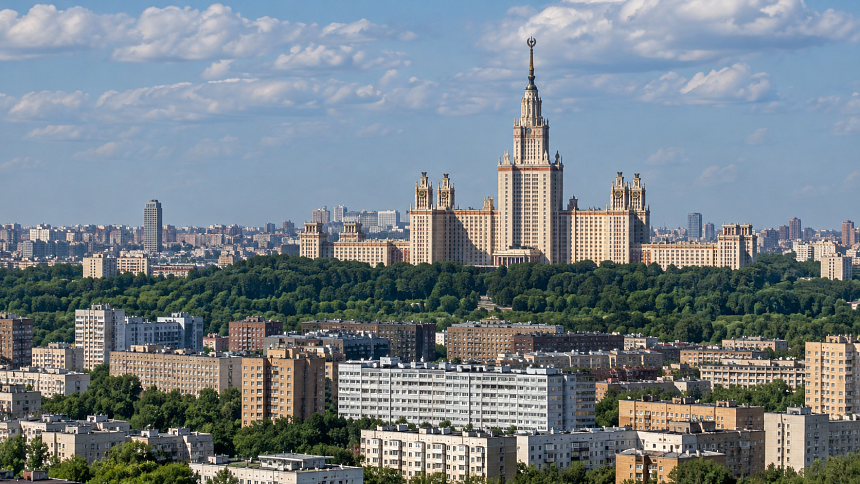
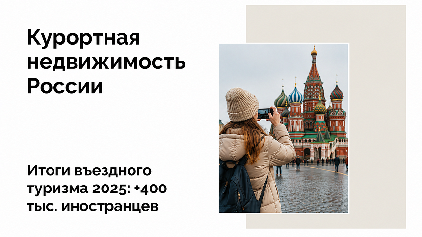

Forbes обновил мировой рейтинг городов по числу миллиардеров: Москва опустилась на третье местоЧитать новость
Что происходит с въездным туризмом в России: итоги 2025 года и планы на 2026Читать новость